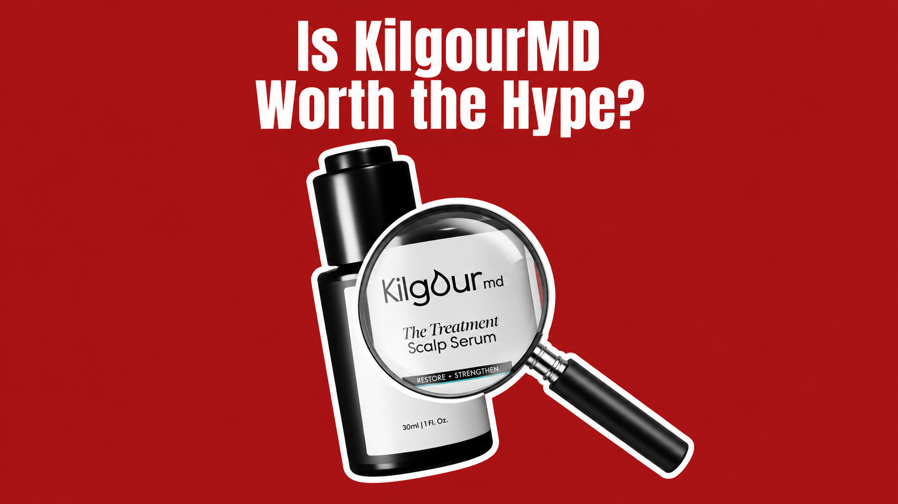
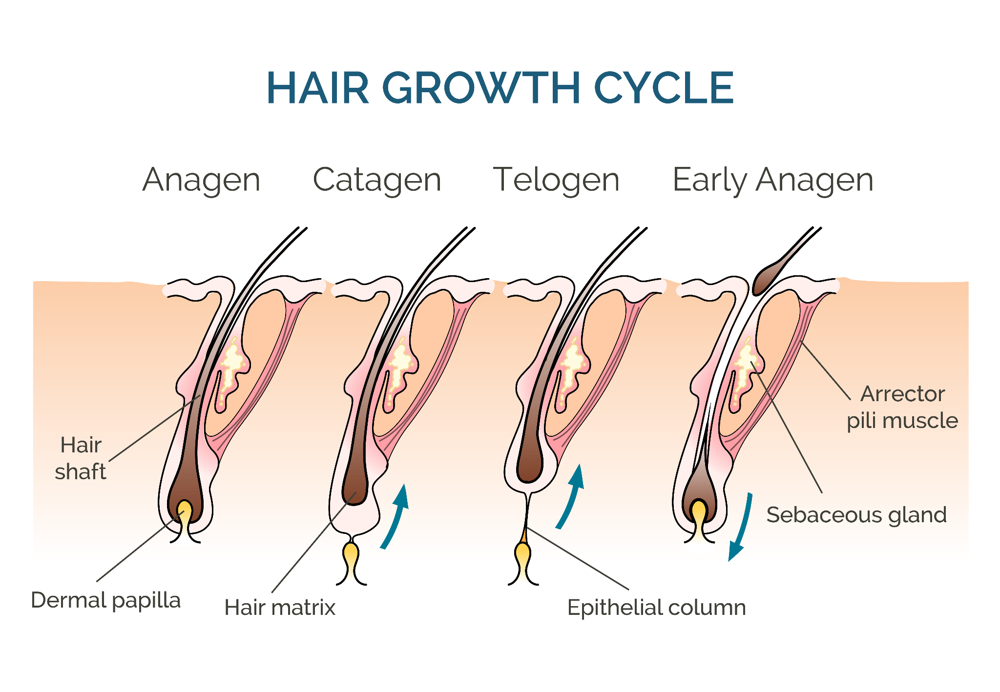
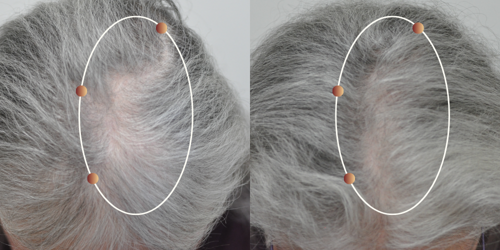

If you’ve spent any time looking for a hair serum, you’ve probably come across KilgourMD. The dermatologist founder, the two-step routine, and the clinical language all make a convincing first impression. Especially when you’re already worried about how much hair is ending up in the shower.
But before committing to another bottle (or, in this case, two), I wanted to get past the branding. What’s actually in the formula? What did the finished product do in a study? And how much of the story holds up once you separate those two things?
KilgourMD has clinical numbers to put in its ads. The harder question is whether the study behind them supports the impression those numbers create. That’s where the story starts to look less convincing.
What’s Actually Inside KilgourMD?
The system pairs a Prevention serum with a Treatment serum. Among its highlighted ingredients are Redensyl®, Capixyl®, Procapil®, AnaGain™, RootBioTec™, and vitamin C. Those trademarked names sound very lab-coat. Several are supplier-developed ingredient blends available to other beauty brands, too.
That doesn’t make them useless. It does mean a long list of impressive-sounding actives isn’t, by itself, proof of a breakthrough. The concentration, formulation, and results of the actual serum matter more.
| Ingredient | The pitch | TBB translation | What to look for |
|---|---|---|---|
| Redensyl® | Follicle support and fuller-looking hair. | A familiar cosmetic hair active, available beyond KilgourMD. | Results from the finished serum, not just the supplier’s ingredient studies. |
| Capixyl® | Scalp support and better hair anchoring. | A blend of red clover extract and a peptide. | Whether the tested dose and formulation match the product you’re buying. |
| Procapil® | Support for hair anchoring and DHT-related pathways. | Another established supplier blend used in hair serums. | A pathway claim is not the same as demonstrated regrowth in people. |
| AnaGain™ | Support for the hair’s growth phase. | Pea sprout extract with a hair-growth story. | How much is used, how it’s delivered, and what the complete formula achieves. |
| RootBioTec™ | Basil root extract for hair and scalp support. | A botanical ingredient; the technical name doesn’t make it a new molecule. | Human evidence beyond an explanation of how it might work. |
| L-ascorbic acid | Antioxidant support for the scalp. | Vitamin C, familiar from skincare. | Scalp benefits and hair regrowth are separate claims. |
My issue is with how easily “contains researched ingredients” becomes “this bottle has been proven to regrow your hair.” Those are different claims. KilgourMD’s own product study is the more useful place to look.
KilgourMD’s Clinical Results: Big Numbers, Missing Controls
The four-month study followed 43 women, predominantly of menopausal age, using both serums together. It was open-label, not double-blind: participants and investigators knew what was being used. There was no placebo or minoxidil comparison group.
KilgourMD reports that average shedding on a standardized comb test fell 51% at 90 days and 60.3% at 120 days, compared with the starting point. Dermatologist-rated visible thinning improved 11.1% at four months.
The headline percentage leaves the central question unanswered: how much of that change did the serums actually cause? Without a control group, the study cannot separate the product’s effect from natural changes in shedding or other influences over those four months. And a 60.3% reduction in shed hairs does not mean 60.3% more hair on your head.
The open-label design adds another weakness. Participants and investigators knew what was being used, leaving subjective reports and visual assessments open to expectation bias. Testing both bottles together also means the results cannot tell you whether either serum works on its own, or whether you need both.
For a premium system sold on its science, these are substantial gaps. This trial does not establish that KilgourMD outperforms minoxidil, or even how it compares with a placebo. Research on individual ingredients cannot fill in those missing comparisons for the finished product. “Clinically tested” makes a persuasive label; it doesn’t answer the questions this study never tested.
And What Is It Like to Actually Use?
A routine can look good on paper and still be a pain to stick with. Two bottles mean two applications and two products to keep buying. That’s worth factoring in before signing up for months of use.
Some online reviewers describe greasy residue or an unpleasant scent. Those are individual accounts, but they raise a practical question: will you want to keep using the products every night?
At a premium price, wanting a formula that fits your daily life is hardly asking too much.
What Would a Different Approach Look Like?
Looking through those familiar ingredients left me with a bigger question: what would a serum look like if the research started with the follicle itself? Which cells need support, and can researchers find molecules that act on them?
That question is what makes NOVOGRO™ worth a closer look. It’s the technology behind the new brand RE:YOU. Behind NOVOGRO™ is a team of top researchers trained at Caltech, Princeton, Harvard, and Northwestern. They used AI-assisted screening and laboratory testing to identify molecules for complementary pathways involved in hair-follicle health.
They’re trying to support both the follicle and the environment around it. That’s a more interesting starting point to me than adding another familiar botanical to the label.
First the Biology. Then the Bottle.
Dermal papilla cells sit at the base of the follicle and help regulate the hair-growth cycle. They’re part of the reason scalp comfort and hair growth aren’t interchangeable: a serum can make your scalp feel nicer without showing that it changes what the follicle does.

That’s the idea behind the NOVOGRO™ research preprint: hair thinning can involve several things going wrong at once. The cells directing growth can become less active, while the tissue around them becomes less supportive. Addressing both gives researchers more than one way to help the follicle.
NOVOGRO™-623 and -624 focus on the follicle’s control center. In lab experiments using human dermal papilla cells, the researchers reported increased cell proliferation. These are the cells that help coordinate hair growth.
NOVOGRO™-273 focuses on the neighborhood around it. It acts on an oxygen-response pathway called PHD2–HIF-1α, involved in growth-factor signaling and the formation of small blood vessels. Think of the aim as giving the follicle a better support system: healthier growth signals and an environment better equipped to supply oxygen and nutrients.
RE:YOU’s Dual-Path Hair Revival Serum combines those three NOVOGRO™ molecules in a formula designed to tackle multiple failure modes in hair thinning. That’s what made me want to look beyond the molecule research and see how the finished serum performed in its clinical trial.
What Happened When RE:YOU Tested It?
RE:YOU’s trial enrolled 190 women aged 35–70 with mild to moderate female pattern hair loss. It was randomized and double-blind, and compared the finished serum with topical minoxidil. That comparison matters: both groups were assessed over the same period, giving the improvements something concrete to be measured against.
In its 90-day interim report, RE:YOU reports 50% greater hair counts and hair density than the minoxidil group. Average shedding fell 56% from baseline on a comb test, a reduction reported as 44% better than minoxidil.
The trial is registered on ClinicalTrials.gov (NCT07785869). That’s a meaningful transparency step: readers can look up the study design, who took part, and what the researchers set out to measure. It gives “clinically tested” something concrete to point to.
on the comb test
in self-assessment
in the comparison trial

For me, the meaningful difference is the test itself. KilgourMD tracked change from the starting point; RE:YOU included a minoxidil comparison. Neither study put KilgourMD and RE:YOU head-to-head, so lining up their percentages and declaring a winner would go beyond the evidence.
So, Is KilgourMD a Breakthrough or Just Great Marketing?
KilgourMD’s study falls short of the breakthrough story. Forty-three women, no control group, and no blinding leave too much unanswered to justify treating the system as a scientific leap. Familiar supplier ingredients and a dermatologist founder don’t close those gaps, and a premium price doesn’t raise the standard of evidence.
What makes RE:YOU interesting is the connection between its molecule research, the finished formula, and a controlled clinical comparison. That’s a clearer reason to pay attention than a longer ingredient list.
Before buying either, I’d look at what was tested, whether the study resembles my own situation, and whether I can realistically stick with the routine. You’re buying something to use for months. It should take more than good packaging to convince you.
Sources & Further Reading
- Fernández, D. G., Quinn, C., Alhayek, S., Prasad, A. R., et al. (2026). Efficacy of a dual-serum cosmetic system in women with female pattern hair loss. Journal of Drugs in Dermatology, 25(6), 83251s3–83251s10. doi:10.36849/JDD.83251.
- Qu Z et al. AI-enabled discovery of small molecules targeting complementary pathways for hair follicle rejuvenation. bioRxiv, 2026. Preprint; not peer-reviewed.
- RE:YOU. Clinical trial results. Company-published 90-day interim findings from a randomized, double-blind minoxidil comparison.
- RE:YOU. Science and clinical proof. Participant self-assessments and representative before-and-after images.
- ClinicalTrials.gov. (2026). Effects of a topical serum solution on hair characteristics (NCT07785869). U.S. National Library of Medicine.